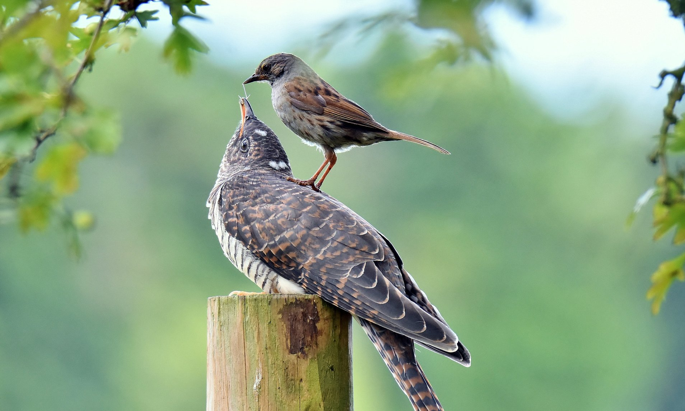

Cuculus canorus
The Common Cuckoo is a brood parasite. It is very well known because it's chicks push the resident family's young out of the nest and the cuckoo chicks are reared by the poor mother. This clever tactic allows more young cuckoos to be reared than would otherwise be possible.